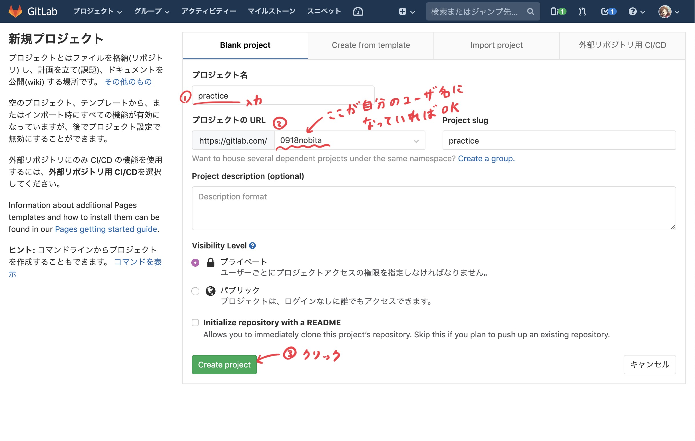
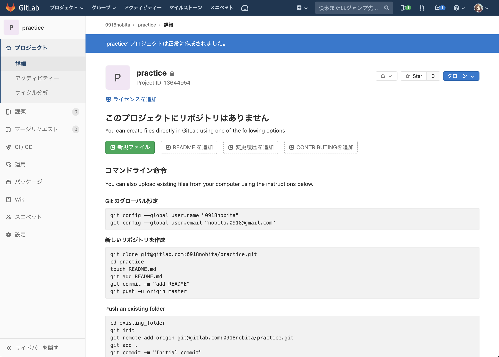

リモートリポジトリの作成・登録
【やること8】 以下の手順でリモートリポジトリを作成してください。
https://gitlab.com/projects/new ← このページを開いてください

↓ リポジトリの作成直後に表示される画面

【やること9】 以下のコマンドを実行してリモートリポジトリを登録してください。
git remote add origin git@gitlab.com:<ユーザ名>/practice.git
※ <ユーザ名> の部分については、Push an existing Git repository の章を参考にしてください。似たようなコマンドを呼び出すように説明されているはずです。
git remote はリモートリポジトリをローカルで管理するためのコマンドです。
add だけでなく set-url (URLの更新) や rename (登録名の変更) など、様々なサブコマンドが利用できます。詳しくは git remote --help で表示されるヘルプを参照してください。
参考になりそうな記事: 基本的な Git コマンドまとめ #remote